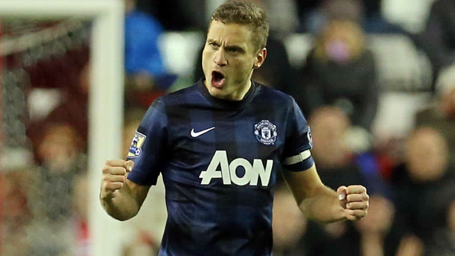

Nemanja Vidic CHÍNH THỨC có bến đỗ mới
Đội trưởng của Man Utd, Nemanja Vidic đã chính thức có bến đỗ mới vào mùa Hè tới.
Cách đây ít phút, Inter Milan xác nhận họ đã có được chữ ký của Vidic theo dạng chuyển nhượng tự do. Trước đó, trung vệ người Serbia tuyên bố sẽ rời Man Utd sau khi hết hợp đồng vào cuối mùa giải này.
Vidic gia nhập Man Utd từ năm 2006 và có hơn 200 lần khoác áo Quỷ đỏ, giúp cho CLB này đoạt 5 chức vô địch Premier League và 1 cúp Champions League.
"Vidic là một cầu thủ đẳng cấp thế giới." Ông Erick Thohir, Chủ tịch Inter Milan nói trên website CLB. "Tôi vô cùng hạnh phúc khi hoàn tất bản hợp đồng này và đưa Vidic đến Milan."
"Anh ấy là một trong những hậu vệ xuất sắc nhất thế giới, với những phẩm chất cùng kho tàng kinh nghiệm của mình, anh ấy sẽ là một tài sản lớn của đội bóng và giúp ích rất nhiều cho các cầu thủ trẻ của chúng tôi. Anh ấy sẽ là một phần của Inter vĩ đại mà chúng tôi đang xây dựng."
Về phía Man Utd, David Moyes khẳng định Vidic và CLB đã cùng nhau đi đến quyết định chia tay mà không có bất cứ mâu thuẫn nào. Trước đó, báo giới Anh tin rằng Vidic quyết chí ra đi sau khi không được BLĐ Quỷ đỏ đối đãi xứng đáng với những gì anh đã cống hiến trong quá khứ.
Tin cùng chuyên mục
- Trước vòng 27 Premier League: Âm hưởng châu Âu
- Đội hình tiêu biểu vòng 26 Premier League
- Top 10 đội bóng gây thất vọng nhất mùa này
- Cay Arsenal, Ibra khiến cả P.League “tức nổ máu"
- Rooney “ăn đòn” ở trận thắng Crystal Palace
Có thể bạn muốn đọc
Tin bình luận nhiều
- Chấm điểm Olympiacos 2-0 M.U: Quỷ vô hồn
- Chấm điểm Arsenal 0-2 Bayern: Buồn cho Ozil
- Thua thảm Olympiacos, David Moyes nói gì?
- Nhà Glazer chi 200 triệu bảng cho Moyes
- Moyes đặt mục tiêu “khó hơn lên trời” cho M.U
- Terry dùng “tiểu xảo” giúp Chelsea… thoát thua
- 10 “hung thần” của các CLB Premier League